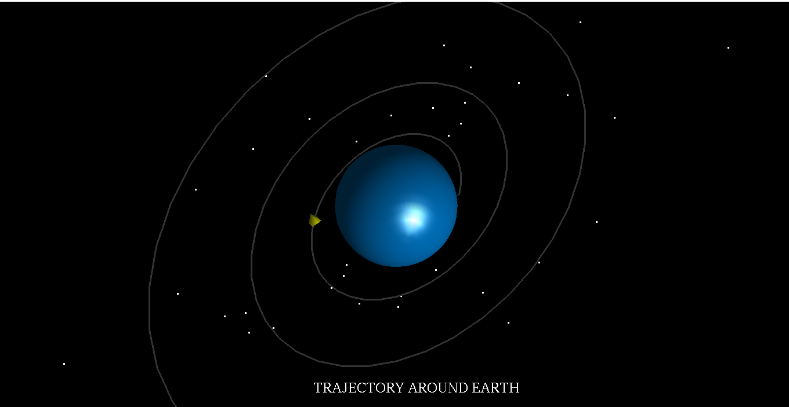
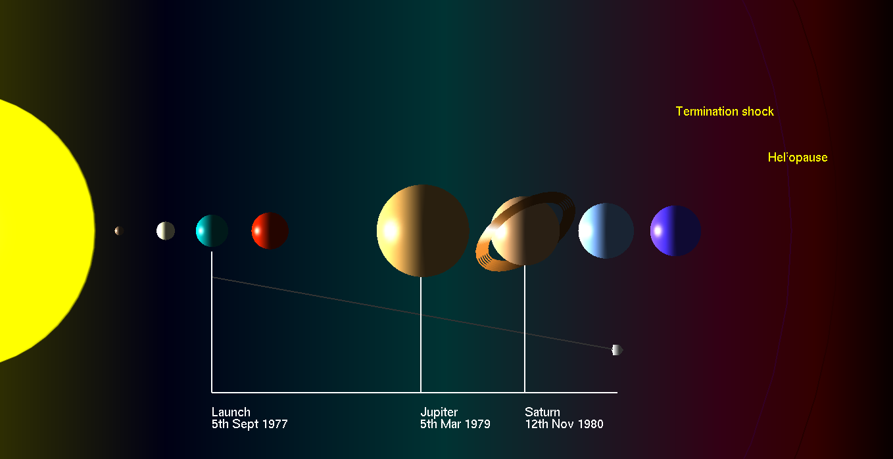

Voyager 1 is the first spacecraft to reach interstellar space. It originally was launched (along with Voyager 2) in 1977 to explore the outer planets in our solar system. However, it has remained operational long past expectations and continues to send information about its journeys back to Earth. The spacecraft officially entered interstellar space in August 2012, almost 35 years after its voyage began. The discovery wasn't made official until 2013, however, when scientists had time to review the data sent back from Voyager 1.Voyager 1 was actually the second of the twin spacecraft to launch, but it was the first to race by Jupiter and Saturn. The images it sent back have been used in schoolbooks and newspaper outlets for a generation. Also on board was a special golden record, carrying voices and music from Earth out into the cosmos. In December 2017 a set of thrusters aboard the Voyager 1 spacecraft successfully fired up after 37 years without use.
This computer graphics and visualization project is an attempt to simulate the path of voyager 1 which is Humanity's Farthest Spacecraft,to celebrate its 40 years in space
The project contains 4 modules.
The first being the model of the Solar System, with the path taken by the Voyager-1 being depicted. The fly-by associated with planets Jupiter and Saturn has also been demonstrated. This is achieved using mathematical functions to depict a spiral, taking into consideration the time of flyby and the satellite's subsequent journey into the region now best described as the helio sheath.
The second module being implemented is the propulsion of the Satellite as it leaves Earth. This again is implemented using Mathematical functions, giving an idea as to how the probe left the Earth's atmosphere, before continuing its journey across space.
The third module implemented is a 2D depiction of the timeline of the events occurring from the propulsion of Voyager-1 on 1977, to its current day position.
This is represented in a linear fashion, so as to simplify and provide better understanding of the major events occurring in between.The fourth and final module depicted is a 3D representation of the satellite itself, with special emphasis being placed to make it appear as real as possible. This is done by using 3D objects such as spheres, meshes, cylinders,etc. This module also gives a complete 3D view of the figure, implemented using the standard rotate function. Multiple occurrences of Callback functions are being used, especially to coordinate the timer along with the motion of the objects. Mouse functions are used to progress from one screen to the next, providing to the user an interactive rendering.